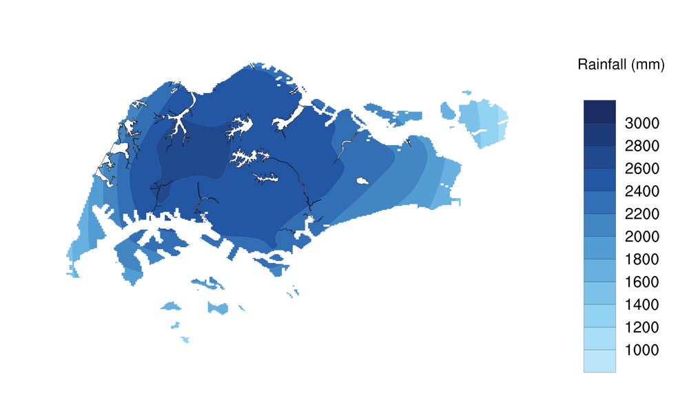
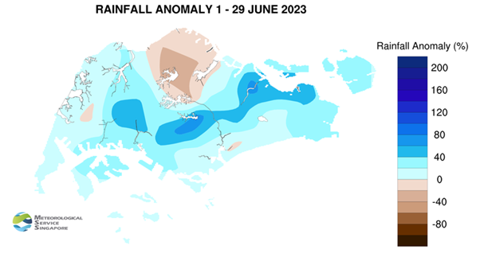
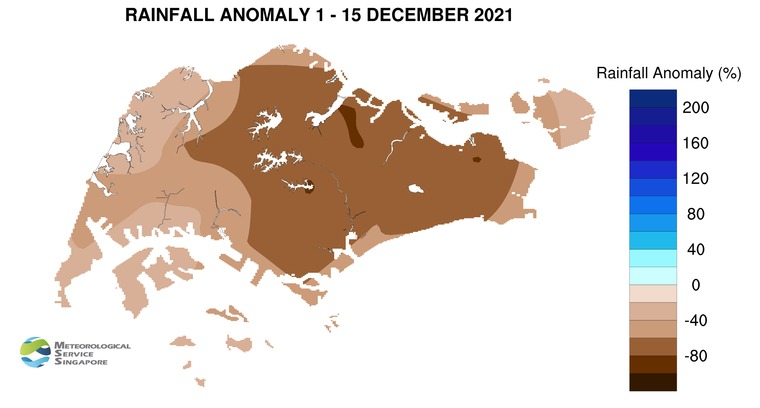
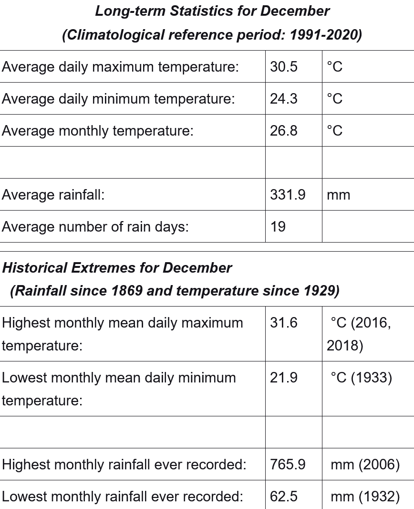

Take-home Exercise 3: Be Weatherwise or Otherwise

1 Setting the scene
According to an office report as shown in the infographic above,
Daily mean temperature are projected to increase by 1.4 to 4.6, and
The contrast between the wet months (November to January) and dry month (February and June to September) is likely to be more pronounced.
1.1 The Task
In this take-home exercise, you are required to:
Select a weather station and download historical daily temperature or rainfall data from Meteorological Service Singapore website,
Select either daily temperature or rainfall records of a month of the year 1983, 1993, 2003, 2013 and 2023 and create an analytics-driven data visualisation,
Apply appropriate interactive techniques to enhance the user experience in data discovery and/or visual story-telling.



Most parts of Singapore recorded above average rainfall in June 2023. MacRitchie Reservoir recorded rainfall of 84 per cent above average, and Mandai recorded rainfall of 34 per cent below average.

In the first half of December 2021, rainfall was well below-average across the whole island. The rainfall anomaly at MacRitchie Reservoir was 81 per cent below average.
